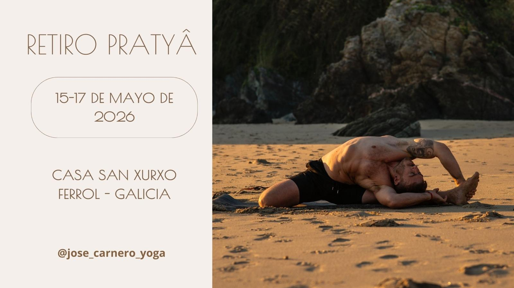

workshop
Workshop en San Xurxo
San Xurxo · Galicia

Sobre el workshop
Encuentro de práctica en San Xurxo donde comparto el trabajo que vengo desarrollando en las clases regulares: alineación, respiración y biomecánica aplicada al movimiento.
El formato está pensado para grupos reducidos, con tiempo para probar, preguntar y ajustar cada postura con calma. Combinamos práctica guiada y bloques más técnicos para que puedas entender el porqué de cada movimiento.
Práctica y enfoque
Utilizamos secuencias inspiradas en Ashtanga y Rocket, adaptadas al grupo, para trabajar fuerza, movilidad y atención. El foco está en la calidad del movimiento, la respiración y en cómo organizar el cuerpo para que la práctica sea sostenible.
Veremos distintas familias de posturas (balances de brazos, invertidas suaves, aperturas de cadera y extensiones de columna) siempre con opciones para diferentes niveles de experiencia.
Agenda tipo
Mañana
- Práctica guiada · secuencia multinivel para entrar en el cuerpo y en la respiración.
- Bloque técnico · trabajo de una familia de posturas (por ejemplo, balances o invertidas).
Tarde
- Práctica más libre · tiempo para repetir, probar variaciones y resolver dudas.
- Cierre · relajación y espacio para integrar lo trabajado.
Para quién es
Este workshop está pensado para personas con cierta experiencia en práctica dinámica (Vinyasa, Ashtanga, Rocket, etc.) que quieran profundizar un poco más en la técnica, ajustar patrones y entender mejor cómo moverse de forma eficiente y segura.
No es necesario “hacer todas las posturas”, sí tener ganas de explorar, escuchar el cuerpo y trabajar con curiosidad y respeto.
Información y reservas
San Xurxo
Galicia
@jose_carnero_yoga · 637 312 106